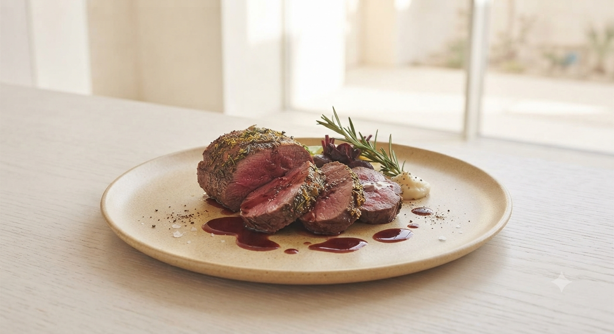
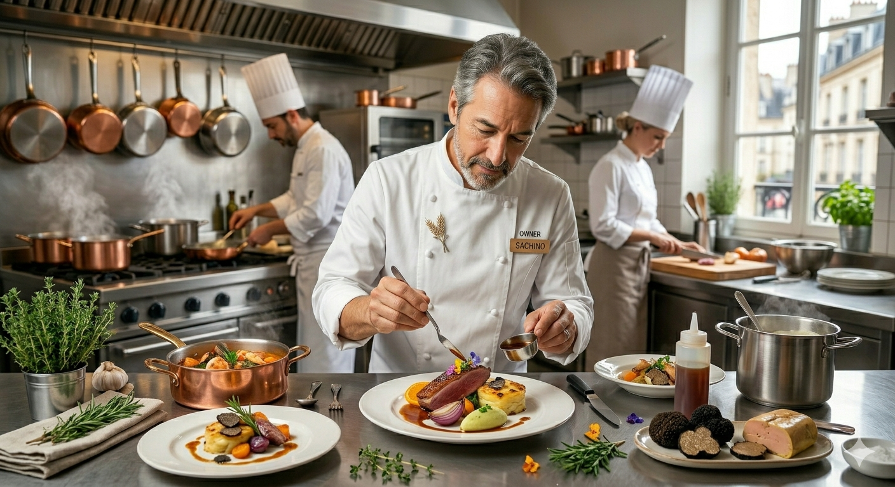
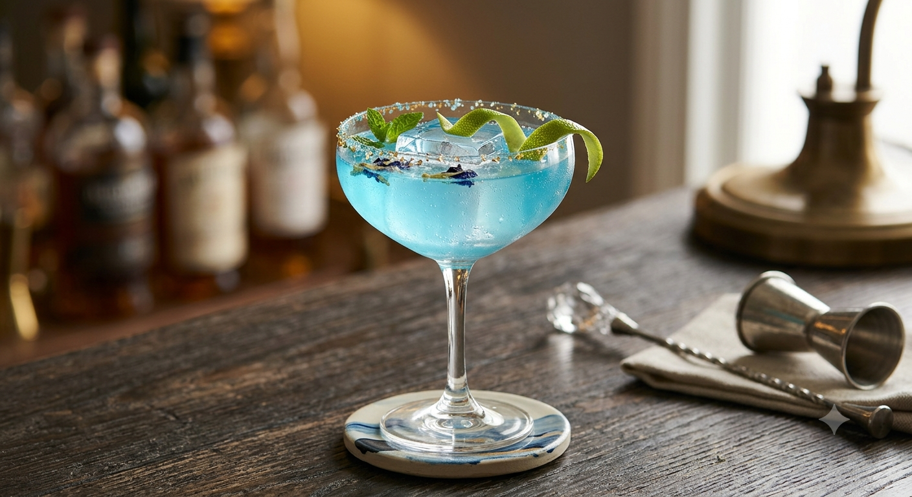
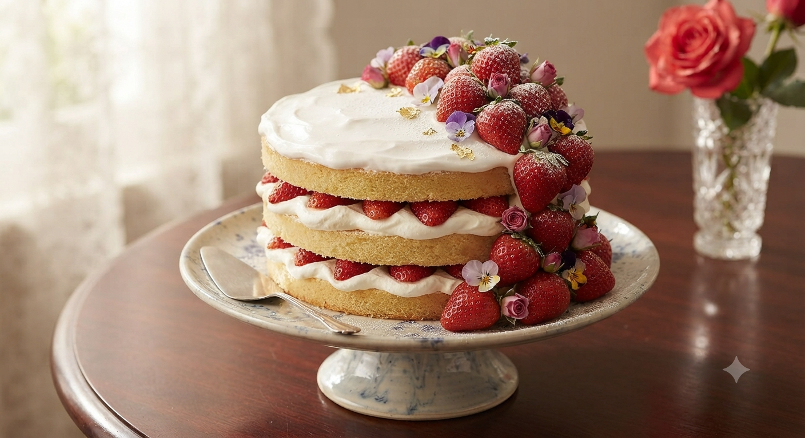
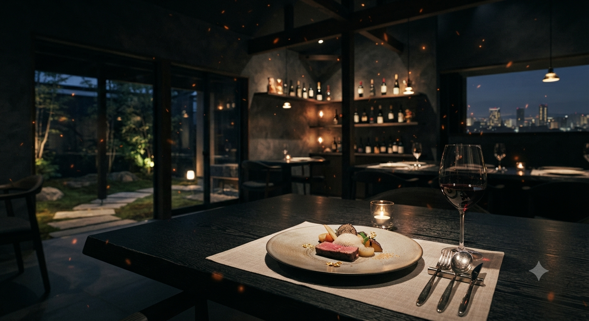

札幌・大通、安らぎが満ちる場所で
「エゾシカのロースト」に酔いしれる。
Invitation
公式LINEご登録で、
祝杯のシャンパンを一杯。
Experience the Essence
北海道産エゾシカの滋味深さ。
店主自ら焼き上げる香り高きパン。
選び抜かれたフランスワインの調べ。
カジュアルな装いの中に潜む、
職人としての圧倒的なこだわり。

「料理の鉄人」に憧れた少年時代から、外資系ホテルの厳格な厨房、そして無給の時代。安田知弘の歩みは、常に料理への貪欲な探究心と共にありました。20年以上の歳月を経て辿り着いたのは、素材の声を紡ぎ、余計なものを削ぎ落とす「職人のフレンチ」。
パンの気泡ひとつ、スパイスのひと振り。そのすべてに、私の人生が宿っています。
記念日を静かに
お祝いしたい
シェフと対話するように
食を楽しみたい
アレルギーや苦手を
気にせず味わいたい
ワンオペレーションだから叶う、
お一人おひとりに寄り添う2.5時間。
札幌の路地裏、みふじビル1F。扉を開ければ、そこはあなただけのプライベートキッチン。苦手な食材への臨機応変な対応は、職人として当然の嗜み。どうぞ、心ゆくまで「Lovey」の空気をお愉しみください。

Botanical & Tea Pairing
お酒を召し上がらない方にも、ワイン同等の一夜ごとの高揚感を。
「お酒が飲めなくても、料理との最高の相性を楽しみたい」――そんなお客様のお声に応え、Loveyでは新たなペアリングサービスの準備を進めております。
余市の果実、甘み溢れる平取産トマト、野性味あふれるハスカップ、そして道産クロモジや厳選茶葉。シェフ自らがスパイスやハーブを絶妙な比率で調合・抽出した、完全オリジナルのノンアルコールコードリンクをコースの各料理に合わせてご提供いたします。
【ペアリングコース構成案】
※提供開始時期および優先予約枠につきましては、公式LINEにて先行ご案内いたします。
「料理やワイン一つひとつにこだわりを感じて、大変素敵なお店です。あまりの感動に初めて口コミを致しました。特別な日にまた利用したいです。」
— 初来店のお客様より
「気さくなのにものすごいこだわりと情熱。パンひとつとっても作り方に工夫が。また行きます。」
— 常連のお客様より

大切な記念日に、シェフ特製のメッセージ入りプレートを無料でご用意いたします。
想いを伝えるお手伝いをさせてください。
※前日までのLINE予約限定
Lovey -french cuisine-
〒060-0042 北海道旭川市中央区大通西14丁目3−19 みふじビル1F
最寄り駅
地下鉄東西線「西11丁目駅」より徒歩圏内
営業時間
ランチ 11:30～14：30
ディナー 17:30～22：30
不定休 / 完全予約制
